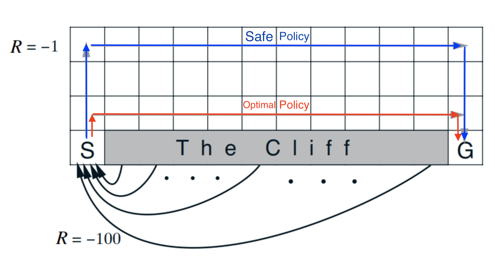
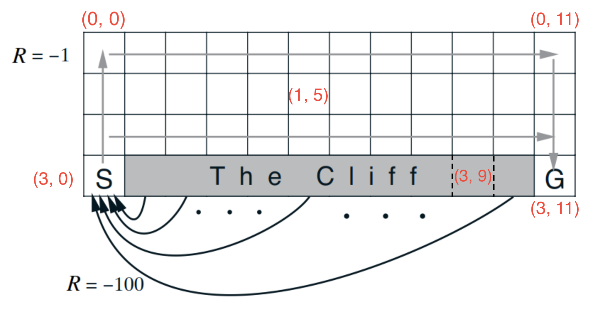

Assignment: Policy Evaluation in Cliff Walking Environment
Welcome to the Course 2 Module 2 Programming Assignment! In this assignment, you will implement one of the fundamental sample and bootstrapping based model free reinforcement learning agents for prediction. This is namely one that uses one-step temporal difference learning, also known as TD(0). The task is to design an agent for policy evaluation in the Cliff Walking environment. Recall that policy evaluation is the prediction problem where the goal is to accurately estimate the values of states given some policy.
Learning Objectives
- Implement parts of the Cliff Walking environment, to get experience specifying MDPs [Section 1].
- Implement an agent that uses bootstrapping and, particularly, TD(0) [Section 2].
- Apply TD(0) to estimate value functions for different policies, i.e., run policy evaluation experiments [Section 3].
The Cliff Walking Environment
The Cliff Walking environment is a gridworld with a discrete state space and discrete action space. The agent starts at grid cell S. The agent can move (deterministically) to the four neighboring cells by taking actions Up, Down, Left or Right. Trying to move out of the boundary results in staying in the same location. So, for example, trying to move left when at a cell on the leftmost column results in no movement at all and the agent remains in the same location. The agent receives -1 reward per step in most states, and -100 reward when falling off of the cliff. This is an episodic task; termination occurs when the agent reaches the goal grid cell G. Falling off of the cliff results in resetting to the start state, without termination.
The diagram below showcases the description above and also illustrates two of the policies we will be evaluating.

Packages.
We import the following libraries that are required for this assignment. We shall be using the following libraries:
- jdc: Jupyter magic that allows defining classes over multiple jupyter notebook cells.
- numpy: the fundamental package for scientific computing with Python.
- matplotlib: the library for plotting graphs in Python.
- RL-Glue: the library for reinforcement learning experiments.
- BaseEnvironment, BaseAgent: the base classes from which we will inherit when creating the environment and agent classes in order for them to support the RL-Glue framework.
- Manager: the file allowing for visualization and testing.
- itertools.product: the function that can be used easily to compute permutations.
- tqdm.tqdm: Provides progress bars for visualizing the status of loops.
Please do not import other libraries — this will break the autograder.
NOTE: For this notebook, there is no need to make any calls to methods of random number generators. Spurious or missing calls to random number generators may affect your results.
1 | # Do not modify this cell! |
Section 1. Environment
In the first part of this assignment, you will get to see how the Cliff Walking environment is implemented. You will also get to implement parts of it to aid your understanding of the environment and more generally how MDPs are specified. In particular, you will implement the logic for:
- Converting 2-dimensional coordinates to a single index for the state,
- One of the actions (action up), and,
- Reward and termination.
Given below is an annotated diagram of the environment with more details that may help in completing the tasks of this part of the assignment. Note that we will be creating a more general environment where the height and width positions can be variable but the start, goal and cliff grid cells have the same relative positions (bottom left, bottom right and the cells between the start and goal grid cells respectively).

Once you have gone through the code and begun implementing solutions, it may be a good idea to come back here and see if you can convince yourself that the diagram above is an accurate representation of the code given and the code you have written.
1 | # Do not modify this cell! |
env_init()
The first function we add to the environment is the initialization function which is called once when an environment object is created. In this function, the grid dimensions and special locations (start and goal locations and the cliff locations) are stored for easy use later.
1 | %%add_to CliffWalkEnvironment |
Implement state()
The agent location can be described as a two-tuple or coordinate (x, y) describing the agent’s position.
However, we can convert the (x, y) tuple into a single index and provide agents with just this integer.
One reason for this choice is that the spatial aspect of the problem is secondary and there is no need
for the agent to know about the exact dimensions of the environment.
From the agent’s viewpoint, it is just perceiving some states, accessing their corresponding values
in a table, and updating them. Both the coordinate (x, y) state representation and the converted coordinate representation are thus equivalent in this sense.
Given a grid cell location, the state() function should return the state; a single index corresponding to the location in the grid.
1 | Example: Suppose grid_h is 2 and grid_w is 2. Then, we can write the grid cell two-tuple or coordinate |
1 | %%add_to CliffWalkEnvironment |
1 | ### AUTOGRADER TESTS FOR STATE (5 POINTS) |
env_start()
In env_start(), we initialize the agent location to be the start location and return the state corresponding to it as the first state for the agent to act upon. Additionally, we also set the reward and termination terms to be 0 and False respectively as they are consistent with the notion that there is no reward nor termination before the first action is even taken.
1 | %%add_to CliffWalkEnvironment |
Implement env_step()
Once an action is taken by the agent, the environment must provide a new state, reward and termination signal.
In the Cliff Walking environment, agents move around using a 4-cell neighborhood called the Von Neumann neighborhood (https://en.wikipedia.org/wiki/Von_Neumann_neighborhood). Thus, the agent has 4 available actions at each state. Three of the actions have been implemented for you and your first task is to implement the logic for the fourth action (Action UP).
Your second task for this function is to implement the reward logic. Look over the environment description given earlier in this notebook if you need a refresher for how the reward signal is defined.
1 | %%add_to CliffWalkEnvironment |
1 | ### AUTOGRADER TESTS FOR ACTION UP (5 POINTS) |
1 | ### AUTOGRADER TESTS FOR REWARD & TERMINATION (10 POINTS) |
env_cleanup()
There is not much cleanup to do for the Cliff Walking environment. Here, we simply reset the agent location to be the start location in this function.
1 | %%add_to CliffWalkEnvironment |
Section 2. Agent
In this second part of the assignment, you will be implementing the key updates for Temporal Difference Learning. There are two cases to consider depending on whether an action leads to a terminal state or not.
1 | # Do not modify this cell! |
agent_init()
As we did with the environment, we first initialize the agent once when a TDAgent object is created. In this function, we create a random number generator, seeded with the seed provided in the agent_info dictionary to get reproducible results. We also set the policy, discount and step size based on the agent_info dictionary. Finally, with a convention that the policy is always specified as a mapping from states to actions and so is an array of size (# States, # Actions), we initialize a values array of shape (# States,) to zeros.
1 | %%add_to TDAgent |
agent_start()
In agent_start(), we choose an action based on the initial state and policy we are evaluating. We also cache the state so that we can later update its value when we perform a Temporal Difference update. Finally, we return the action chosen so that the RL loop can continue and the environment can execute this action.
1 | %%add_to TDAgent |
Implement agent_step()
In agent_step(), the agent must:
- Perform an update to improve the value estimate of the previously visited state, and
- Act based on the state provided by the environment.
The latter of the two steps above has been implemented for you. Implement the former. Note that, unlike later in agent_end(), the episode has not yet ended in agent_step(). in other words, the previously observed state was not a terminal state.
1 | %%add_to TDAgent |
Implement agent_end()
Implement the TD update for the case where an action leads to a terminal state.
1 | %%add_to TDAgent |
agent_cleanup()
In cleanup, we simply reset the last state to be None to ensure that we are not storing any states past an episode.
1 | %%add_to TDAgent |
agent_message()
agent_message() can generally be used to get different kinds of information about an RLGlue agent in the interaction loop of RLGlue. Here, we conditonally check for a message matching “get_values” and use it to retrieve the values table the agent has been updating over time.
1 | %%add_to TDAgent |
1 | ### AUTOGRADER TESTS FOR TD-UPDATES (20 POINTS) |
Section 3. Policy Evaluation Experiments
Finally, in this last part of the assignment, you will get to see the TD policy evaluation algorithm in action by looking at the estimated values, the per state value error and after the experiment is complete, the Mean Squared Value Error curve vs. episode number, summarizing how the value error changed over time.
The code below runs one run of an experiment given env_info and agent_info dictionaries. A “manager” object is created for visualizations and is used in part for the autograder. By default, the run will be for 5000 episodes. The true_values_file is specified to compare the learned value function with the values stored in the true_values_file. Plotting of the learned value function occurs by default after every 100 episodes. In addition, when true_values_file is specified, the value error per state and the root mean square value error will also be plotted.
1 | %matplotlib notebook |
The cell below just runs a policy evaluation experiment with the determinstic optimal policy that strides just above the cliff. You should observe that the per state value error and RMSVE curve asymptotically go towards 0. The arrows in the four directions denote the probabilities of taking each action. This experiment is ungraded but should serve as a good test for the later experiments. The true values file provided for this experiment may help with debugging as well.
1 | # Do not modify this cell! |
<IPython.core.display.Javascript object>
1 | # The Safe Policy |
1 | ### AUTO-GRADER TESTS FOR POLICY EVALUATION WITH SAFE POLICY |
1 | # Do not modify this cell! |
1 | ### AUTO-GRADER TESTS FOR POLICY EVALUATION WITH NEAR OPTIMAL STOCHASTIC POLICY (40 POINTS) |
Wrapping Up
Congratulations, you have completed assignment 2! In this assignment, we investigated a very useful concept for sample-based online learning: temporal difference. We particularly looked at the prediction problem where the goal is to find the value function corresponding to a given policy. In the next assignment, by learning the action-value function instead of the state-value function, you will get to see how temporal difference learning can be used in control as well.